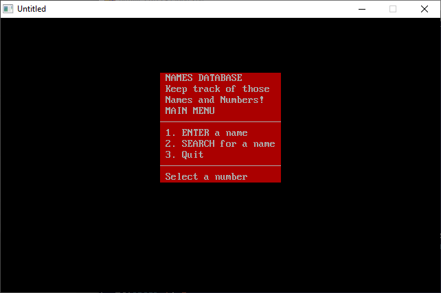

Home • News • GitHub • Wiki • Samples • InForm • GX • QBjs • Community • More…
SAMPLE: NAMES

Author
Description
' NAMES.BAS by David Bannon
' Copyright (C) 1992 DOS Resource Guide
' Published in Issue #6, November 1992, page 65
'
==============================================================================
-------------
NAMES.BAS
NAMES.BAT
INSTALL.BAT
-------------
SYSTEM REQUIREMENTS:
The version of QBasic that comes with DOS 5 or later, or Microsoft Quick Basic
4.x. Two companion files, INSTALL.BAT and NAMES.BAT (both of which are on
this diskette), simplify installing and starting NAMES.BAS.
WHAT NAMES.BAS DOES:
This QBasic program lets you create a simple database of companies, contact
names, and telephone numbers. You can search the database by company name or
by first or last name. PHONE.BAS on this diskette performs a similar
function.
USING NAMES.BAS:
You can follow the standard QBasic procedures for starting NAMES.BAS, but
you'll probably find it more convenient to use NAMES.BAS with its companion
files, INSTALL.BAT and NAMES.BAT.
INSTALL.BAT simplifies installation, copying NAMES.BAS from its current
location to your C:\DOS subdirectory. INSTALL.BAT also places NAMES.BAT, the
batch file used to start NAMES.BAS, in your hard disk's root directory.
When you type NAMES at the DOS prompt, NAMES.BAT changes to your \DOS
directory, starts QBasic, and runs NAMES.BAS. NAMES.BAS presents you with
three options: entering a name, searching for a name, or quitting the program.
When you press 1 to choose the first option, NAMES.BAS prompts you to enter
the name, area code, phone number, and company name for each entry. If you
type END (any combination of upper- and lowercase number is acceptable) in the
last-name field, the program closes the file and returns you to the main menu.
When you press 2 to select the search option, the program asks you to supply
the name you want to look for. When a match is found, NAMES.BAS prints all the
database entries that match your criteria. The program informs you if no match
exists and repeats its request for a name. As with the first option, typing
END returns you to the main menu.
Choose option 3 from the main menu to quit the program.
For further details on NAMES.BAS, see "Building a QBasic Database" (DRG #6,
November 1992, page 65).
QBjs
Please note that QBjs is still in early development and support for these examples is extremely experimental (meaning will most likely not work). With that out of the way, give it a try!